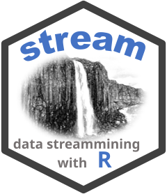
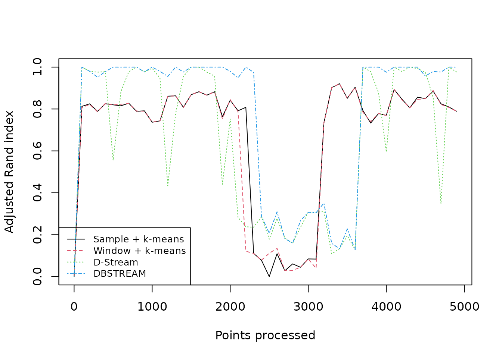
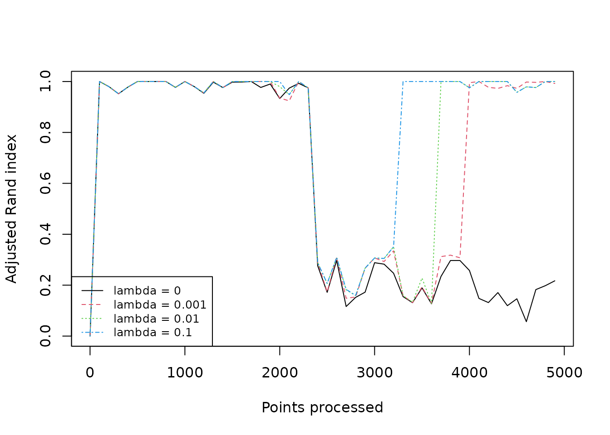

Cluster Evaluation for Non-stationary Data Streams
Michael Hahsler
Source:vignettes/evaluation_non-stationary.Rmd
evaluation_non-stationary.RmdIn a non-stationary (evolving) stream, the distribution of incoming points changes over time. A clustering model has to forget outdated observations to follow this concept drift, and a single quality score computed at one point in time cannot tell us whether it does. This guide shows how to evaluate stream clustering when the data moves: how to measure quality on new points, how to track that quality over time, and how to compare models and settings fairly. If you are new to the package, start with Getting started with stream.
Inspect moving clusters
DSD_Benchmark(1) generates two clusters that move
diagonally across the unit square and intersect in the middle, together
with background noise.
stream <- DSD_Benchmark(1)
stream
#> Benchmark 1: Two clusters moving diagonally from left to right, meeting
#> in the center (d = 2, k = 2, 5% noise).Class: DSD_MG, DSD_R, DSD
#> With 3 clusters in 2 dimensions. Time is 1Plot four short sections of the stream, skipping 1400 points between
plots. Fixed axis limits make the movement visible. Both
plot() and get_points() advance the
stream.
old_par <- par(mfrow = c(2, 2))
for (i in seq_len(4)) {
plot(stream, n = 250, xlim = c(0, 1), ylim = c(0, 1),
main = paste("Starting at point", 1 + (i - 1) * 1650))
arrows(0.15, 0.85, 0.85, 0.15, col = "gray70", lwd = 2)
arrows(0.15, 0.15, 0.85, 0.85, col = "gray70", lwd = 2)
if (i < 4) invisible(get_points(stream, n = 1400))
}
par(old_par)The arrows indicate the directions of travel. Near the crossing, the two generating clusters overlap, making them difficult to distinguish using only the observed features.
Why a single score is not enough
As in Getting started with stream,
evaluate_static() tests the current model on new points
without updating it. The generated stream carries the true cluster
labels, so external measures such as purity and the adjusted Rand index
(crand) can be calculated.
On a stationary stream, one such score is a reasonable summary. Here, the score depends on when we look. Train a DBSTREAM model on the first 1000 points and evaluate it on the points that follow immediately, and again on points taken much later, after the clusters have moved.
set.seed(0)
stream <- DSD_Memory(DSD_Benchmark(1), n = 5000)
model <- DSC_DBSTREAM(r = 0.05, lambda = 0.01)
update(model, stream, n = 1000)
# new points right after the training data
evaluate_static(model, stream, n = 200,
measure = c("purity", "crand"), type = "macro", assign = "micro")
#> Evaluation results for macro-clusters.
#> Points were assigned to micro-clusters.
#>
#> purity cRand
#> 0.9666667 0.9625210
# points from late in the stream; the model has not seen the movement
invisible(get_points(stream, n = 3000))
evaluate_static(model, stream, n = 200,
measure = c("purity", "crand"), type = "macro", assign = "micro")
#> Evaluation results for macro-clusters.
#> Points were assigned to micro-clusters.
#>
#> purity cRand
#> 0.465 0.000The model is frozen after the first 1000 points, so the second result measures how well an outdated model describes the current data. This is the situation that stream evaluation needs to capture: a model should be judged on the points it has not yet seen, at every stage of the stream, while it keeps being updated.
Prequential evaluation
evaluate_stream() implements prequential
(test-then-train) evaluation. It repeatedly evaluates the current model
on the next batch of points, and only then updates the model with that
batch. Every point is therefore used for testing before it is used for
learning, and the result is a series of scores that follows the stream
over time.
Generate and store 5000 points. Resetting a DSD_Memory
stream replays the same points, which makes comparisons fair. Resetting
a generator resets its position but does not in general reproduce the
same random observations.
set.seed(0)
stream <- DSD_Memory(DSD_Benchmark(1), n = 5000)Compare a sample biased toward recent data, a fading sliding window,
D-Stream, and DBSTREAM. The sample and window use k-means to form two
macro-clusters. D-Stream and DBSTREAM determine macro-clusters using
their built-in methods. We use lambda = 0.01 for the window
and density-based methods to forget older points quickly enough to
follow the movement.
algorithms <- list(
"Sample + k-means" = DSC_TwoStage(
micro = DSC_Sample(k = 100, biased = TRUE),
macro = DSC_Kmeans(k = 2)),
"Window + k-means" = DSC_TwoStage(
micro = DSC_Window(horizon = 100, lambda = 0.01),
macro = DSC_Kmeans(k = 2)),
"D-Stream" = DSC_DStream(gridsize = 0.1, lambda = 0.01),
"DBSTREAM" = DSC_DBSTREAM(r = 0.05, lambda = 0.01)
)Each batch contains horizon = 100 points, producing 50
evaluations per model over the 5000 points. We request purity and the
adjusted Rand index for the macro-clusters. Assignments go through
micro-clusters to retain the shape of density-based macro-clusters. Each
model is evaluated on the same replayed points.
evaluation <- lapply(algorithms, function(model) {
reset_stream(stream)
evaluate_stream(model, stream, horizon = 100, n = 5000,
measure = c("purity", "crand"), type = "macro", assign = "micro")
})
head(evaluation[["DBSTREAM"]])
#> points purity cRand
#> 1 0 0.4200000 0.0000000
#> 2 100 1.0000000 1.0000000
#> 3 200 0.9920635 0.9797314
#> 4 300 0.9487179 0.9519319
#> 5 400 0.9666667 0.9783402
#> 6 500 1.0000000 1.0000000Each result has a points column with the position in the
stream and one column per measure. The first row is computed before the
model has seen any points, so it is NA or meaningless for
some models.
Compare models over time
Collect the adjusted Rand index of all models and plot it against the position in the stream.
position <- evaluation[[1]][, "points"]
scores <- sapply(evaluation, function(x) x[, "cRand"])
matplot(position, scores, type = "l", lwd = 1,
xlab = "Points processed", ylab = "Adjusted Rand index")
legend("bottomleft", legend = names(algorithms),
col = seq_along(algorithms), lty = seq_along(algorithms), cex = 0.8)
The trajectories show that all clustering algorithms do better when the two clusters are well separated. The quality deteriorate where the clusters overlap near the crossing because it is impossible to separate the points of two clusters in the same location. In the second half of the plot, you see how quickly each model recovers when the clusters separate again. Note that the methods differ in their noise handling. K-means cannot handle noise and assigns every point to a cluster, while the density-based methods can leave points unassigned. This is why the k-means based methods never reach the almost perfect adjusted Rand index like D-Stream and DBSTREAM.
To summarize a whole run, look at the distribution of the scores, or at their mean.
boxplot(scores, las = 2, cex.axis = 0.8, ylab = "Adjusted Rand index")
colMeans(scores)
#> Sample + k-means Window + k-means D-Stream DBSTREAM
#> 0.6710570 0.6578957 0.6540483 0.7722555Purity is available from the same evaluation. It is easy to interpret, but it rewards splitting the data into many small clusters, so report it together with the adjusted Rand index.
purity <- sapply(evaluation, function(x) x[, "purity"])
colMeans(purity)
#> Sample + k-means Window + k-means D-Stream DBSTREAM
#> 0.8647967 0.8676390 0.8705822 0.9212552These settings illustrate one experiment rather than establishing a ranking across streams. Repeat the evaluation with several random streams before drawing conclusions.
Tune the forgetting rate of data stream clustering algorithms
Most data stream algorithms include a mechanism to forget old data so
they can focus on more recent data in non-stationary stream. A common
implementation is to use a fading rate lambda.
Both D-Stream and DBSTREAM have a lambda parameter.
Here, we evaluate DBSTREAM with several lambda values on
the same data. A value of 0 means that old points are never
forgotten.
lambdas <- c(0, 0.001, 0.01, 0.1)
lambda_eval <- lapply(lambdas, function(l) {
reset_stream(stream)
evaluate_stream(DSC_DBSTREAM(r = 0.05, lambda = l), stream,
horizon = 100, n = 5000,
measure = "crand", type = "macro", assign = "micro")
})
lambda_scores <- sapply(lambda_eval, function(x) x[, "cRand"])
colnames(lambda_scores) <- paste("lambda =", lambdas)
matplot(position, lambda_scores, type = "l", lwd = 1,
xlab = "Points processed", ylab = "Adjusted Rand index")
legend("bottomleft", legend = colnames(lambda_scores),
col = seq_along(lambdas), lty = seq_along(lambdas), cex = 0.8)
colMeans(lambda_scores, na.rm = TRUE)
#> lambda = 0 lambda = 0.001 lambda = 0.01 lambda = 0.1
#> 0.5538800 0.7269201 0.7722555 0.8397469Without forgetting (lambda = 0), the model keeps
describing where the clusters used to be and scores clearly lower. In
this experiment the mean score improves as lambda grows up
to 0.1. Forgetting that is too fast would eventually discard points
before they can support a stable cluster, so the best value depends on
how quickly the stream changes and how fast points arrive.
Animate the stream and clustering
Seeing the clustering next to the data helps to understand the
scores. The following animation shows 5000 points in batches of 100,
with DBSTREAM’s micro- and macro-clusters overlaid. The GIF loops
automatically, displaying ten frames per second. It is embedded directly
in the HTML, so the document can be shared without separate image files.
I set wait to 0 in the animation since it is rendered in
the notebook. Use a suitable value for interactive use.
set.seed(1000)
animation_stream <- DSD_Benchmark(1)
animation_model <- DSC_DBSTREAM(r = 0.05, lambda = 0.01)
res <- animate_cluster(animation_model,
animation_stream,
measure = "cRand",
horizon = 100,
n = 5000,
wait = 0, # for use in a notebook
plot.args = list(xlim = c(0, 1),
ylim = c(0, 1),
type = "both"))
Summary
- Evaluate a non-stationary stream over time. A single score only describes one moment.
- Use prequential evaluation (
evaluate_stream()) so that each batch is tested before the model learns from it. - Replay a stored
DSD_Memorystream so that all models see the same points. - Report the adjusted Rand index together with purity, and look at the whole trajectory as well as its mean.
- Treat the forgetting rate and similar settings as part of the model you are evaluating, and compare several values.